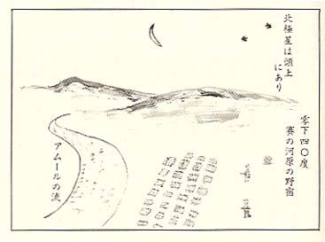

|
 アムール川岸の吹き晒しの夜空に向って、 眼を開けると、星の瞬く中に北斗の星が一段 と大きく煌めいていた。北極星を頭上に仰い で、空腹の薄い腹の皮を、括りつけて抱き合 いながら、刺す寒気に震え合うのであった。北極渡りの風は、夜半になると気温はグング ン降る。夜明前頃になると零下四〇度を超え る。吐く息は白い蒸気となって、毛布の中に 溜り凍り付いて、氷の布団となる。それでも お互の体の接触している空間には、体温が保 存されて、微睡みながら凍死は免かれた。暁 の起床のときは、氷の布団を剥すので、バり バリと音をたてた。誰かかが満州行進曲の唄 をうたい出した。 「 酷寒零下三十度 銃も剣も砲身も こまの ひずめも、凍るとき すわや近づく 敵の影 防寒服が 重いぞと・・・・・♪」 今はこんな甘いメロデーの唄どころの表現 では、及ぶべきものではなかった。現実の世 界は想像を絶していた。 第一夜の夜営は明けたが、これから家畜集 団にも劣る日日を迎えることになろうとは、 誰も想像していなかった。 家畜の群なら、雑草でも喰うことができる。 河岸の丘には、ソ連人が掘り起して収穫を終 えたジャガ畑があった。掘り残しのジャガを 求めて、宝物探しのように、土をあさって見 た。小さいのでもあればよいと、祈る気持で 皆掘り跡を探した。幸いにも、一ケでも見つ けた者の喚声が上るのを聞いては、溜め息を 洩すのだった。 毎日舌の上にのる飯盒給食は、グリーンピ ースの豆が三粒位浮いた塩味のスープだけと なった。 栄養失調者は、脚が浮腫み、痩せ犬がよろ ける恰格で、賽の河原を歩くのだった。 しかしまだ「ウラジオから帰るのさ－」の この一言が神頼みとなって望をつないで耐え たが、この有力情報も、段々と幻の神話のよ うな予感がしてきたのだった。 河原野営六日目、十月十五日、シベリア鉄 道乗車命令の伝達がきた。野営の毛布を梱包 して背負い、ソ連警備兵の誘導で賓の河原に 別れをつげた。 恐ろしい寒気流の北斗星下での野営は、みなの 心臓まで凍らせる程に、残酷だった。飢えと寒さ に体力を消耗させ、歩くだけが精一杯だった。 それに引き換えソ連警備兵たちは、一枚の 小さなテント張りで暖を採り、少しは飽食し ていたので、零下の星空にも平気で、警備の 任について立哨していた。 丘を越えると、満鉄線と同じように、二十 輌編成の列車が、我が部隊を待っていた。ど の貨車も古びた板が、内側に打ちつけられて いた。奴隷運搬車輌として、今まで何回も使 用されているのであろう、人間の苦悩と、不 潔な体臭が木目の芯まで沁みこんで、多くの 人間の怨霊が漂うているようだった。 下段に十二人、上段に十三人づつ、左右全 部で五十人が肩と膝を寄せ合って、窮屈なが らも横になって何とか寝られるのであった。 満州での家畜列車が、今度はシベリアの家 畜列車に引き継がれたことになった。隠し持 ってきた地図（中学校教科書用世界地図）で 見ると、「ブラコベチエンスク」駅は、シベ リア本線からの支線の終着駅となっていた。 本線の分岐駅は、「ベロコルスク」駅となっ ていた。 家畜列車はブラコベを発車すると、シベリ ア特有の荒涼とした雑木林の丘陵を、縫うよ うにして走った。駅舎も人家も何時間走って も見当らない。やっと乗車人員の尿意と、空 腹の度合いに合せたように、列車は少し傾斜 した丘に停った。 そこは白樺の林が広がっていた。炊事兵と 使役兵が出て、ドラム缶炊事が始まった。 白樺の木は、生木のままで伐り口から白い 泡を噴いてよく燃えた。ここでも給食は、グ リンピースの泳ぐスープだけだった。もう物 々交換するロシヤ労働者も、姿を現わさなか った。 空腹で腑抜けた噴、シベリア本線の「ベロ コルスク」駅に着いた。赤い太陽は冷え切っ たような光を放って、沈みかけ薄暮となった。 この駅こそ、我等の運命の岐れ道だ。右する か、左するかで決る。 「汽車よ！！何卒東方を向いて走ってくれ！」 乗車人員千人の神に祈る切なる悲願が、こ の数刻に籠められたのであった。 部隊本部副官の恰幅の良い大尉は、東京浅 草出身者で、博学の大尉殿で通っていた。何 時も状況判断の第一人者であった。大尉は鷹 揚に発言してくれた。 「な－に－心配するな－ウラジオから帰る のに決まっているのさ！ ソ連将校の口振り も、そう言っているではないか。おれたちを シベリアに連行して、ソ連に何の得がある？ ただ喰わせるだけでも、戦争で疲弊しきって いる今のソ連では、大変なことだ。そんな馬 鹿な負担をする道理がない。情けない格好す るなツ。」 「そうですよ、大尉殿の判断の通りです。 私達もそのように信じています。きっとそう です。そのように神に祈っていますよ－」 やがて運命を告げる発車の汽笛が、薄暮の 昿野に鳴った。長い家畜列車の車両は、軌み 合いながら、次第に速度を増した。長い長い 神への祈りの数刻が過ぎた。 「おーい、進行方向は東か西か、どちらだ！！」 「まだ良くは分らないが、何んだか太陽の 沈んだ西の夜空の方角らしいな－。」 博学を任じた大尉殿は、毛布を被って黙っ てしまった。するとまた誰かが叫んだ。 「西方は浄土とも言うが、シベリア地区で は、西方は地獄だ。今から地獄の一丁目に、 這入って行くのだ。もうこうと決まれば、度 胸を据えるより外はない。情けない格好をす るな。！」 「日本人はどだい人間が良すぎるのだよ、 ソ連戦術の謀略に、まんまと簸められたのだ よ！」 と、また誰かが呟いたが、もう列車は速度 を増して、西の方角に向いて驀進していた。 もう誰も口を利く者はいなかった。 シベリアの昿野は、陰惨な薄暮から夕闇の 中に入った。しかしまだ少し残った黄昏のシ ベリアの空には、夕炊け雲が、遠く北極の空 まで、尾を引いて焼けていた。 一夜が明けた。沿線には人家の影もない。 樹林があるかと見れば草原となり、湿原地帯 の沼地から湧き上る霧は、結氷期の前触れで もあらうか。 「ウラジオ港から一帰るのさ！」 この淡い望みの帰還説は、霧消し悲惨にも 打ち砕かれたのであった。 ブラコベを発車して三日間に、ソ連輸送指 揮官からの命令伝達があった。 「次の停車駅で、将校佩用の軍刀は、凡て ソ連指揮官に引き渡すべし。」 これまで大切に佩用させておき乍ら、ソ連 領に連れ込んだら、全部巻き上げて頂戴する とは、何と狡い奴だ。ウラジオ帰還説を流布 して、信じさせておいて、こん度は軍刀巻き 上げと、騙しの手は凡て巧妙を得ていた。 ソ連に騙し取られた軍刀には、肥前忠吉、 備前長船等々銘刀の逸品業物も多かった。何 処かの美術館に陳列して、日本の美を残すと 言うことであれぼ、文句はないが、どうせ薪 割か、西瓜割位しか使わないさとうそぶいて、軍 刀引渡劇は簡単に終った。 十月末は、シベリアの原始林は落葉の季節 だった。針葉樹の松拍類だけ、緑を留めてい たが、他の雑林は裸木に変らうとしていた。 北極圏までも連らなる樹海の山脈は、幾重に も、山襞を重ね合って果てしない。 家畜列車の扉から垣間見る、この知られざ る世界の雄大な景観は、しばし空腹を忘れさ せてくれた。喰い入るように眺めていたら、 渓谷の斜面に、日本兵の森林伐採作業に、苦 役している一隊の姿が、目に映った。 もう既に奴隷作業に酷使されているのだな －と、直感した。これぞ西方地獄の一丁目が、 紛れもなく現実となって現われたのだった。 この地方の山岳地帯には、多くの日本俘虜部 隊が、空腹をかかえて、喘ぎながら針葉樹の 巨木伐採に従事しているのだった。 沿線から見る原生林地帯は、果てしない樹 海の大陸だった。 「あすこの斜面にも、別の一団がいるぞ」 日本兵の作業隊が、チラチラ見え隠れする。 「ここらが地獄の二丁目だ、我等は何丁目 に行き着くのであろうか」 皆一様に明日への不安が、募ってきた。列 車は幽谷を越え、剣山を潜り、昼となく夜と なく、ドラム缶炊事停車以外は、驀進を続け た。 薄い高梁粥は、食後三十分も経過すると、 腹の中から放尿と同時に消えてなくなる。満 腹感を覚ゆるのは、高梁粥を更に水でうすめ て、腹の皮が伸びた数刻の間だけだった。長 持ちはしない。放尿して腹の中の濃度が、少 し濃ゆくなった頃、もう一度喉から戻して、 喰い直すことができたら、何と幸せだろう。 これができるのは、牛か駱駝位なものだろう。 こんな会話を交して、車中放談が途切れたと き、息絶え絶えの予備兵が、 「あーおれも牛のように、一度呑み込んだ ものを、もう一度喉から戻して、反芻できた ら、餓死せんでもすむのだがな－」 と、こんな妄想の独り言を洩し乍ら、落ち こんだ眼孔を閉じて、永眠する姿は、何とも 言い様のない哀れであった。 ブラコベを発車してから、栄養失調患者の 死亡者が、急に増えてきた。 ドラム缶炊事停車中に、各車両から、もう 八人が、仏となっていると云う本部からの情 報が伝わった。今日も三号と十三号車両から 痩せ枯れた仏が三体も出た。 亡骸は、次の停車駅のチタ駅で、所属の戦 友が担いで、高台の昿野の格好の地を選んで、 合同埋葬した。浄土真宗僧侶出身の年輩兵士 が、簡単な読経で引導を渡して成仏させてく れた。浅い穴を掘って埋め、墓標代りに、石 を数個並べて合掌して野辺の送りをした。 「友は野末の右の下…」 これから先、また幾人かが、石の下に眠る のであらうか、まだ地獄の道標は果てしない。 |